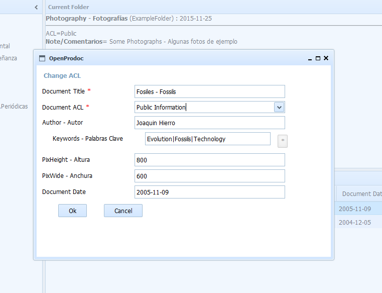

This form allows you to modify the permissions (ACL)of the document selected
Unlike the modification of the document, which requires to have it blocked and create a new version, this option allows modifying the ACL of the current version, without blocking it or creating a new version.
It can not be done if the document is already blocked, or if at least the modification permissions are not available on the document.
